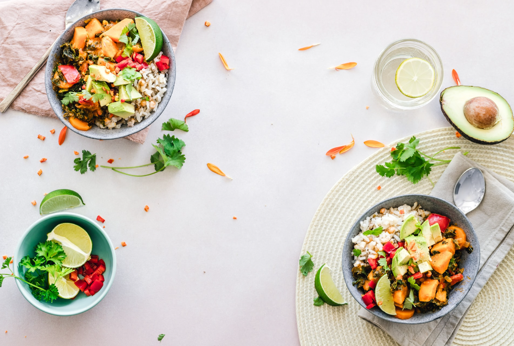

Sweet Potato and Kale Bowl
Learn different ways to cook potatoes

Ingredients
For the sweet potato
- 2 tablespoons olive oil
- 1 head cauliflower
- 3 cloves garlic
- 1 cup milk
For the kale
- 1 tablespoon bacon fat
- 3 cups chopped kale
- 3 cloves garlic minced
Instructions
- Place potatoes into a pot with a steamer insert and enough water to reach the bottom of the potatoes.
- Place a lid on top and turn the heat to medium-high. The steam gets hotter than boiling in water, allowing the potatoes to cook faster.
- After about 15-20 minutes the potatoes should be fork-tender and ready for mashed potatoes.